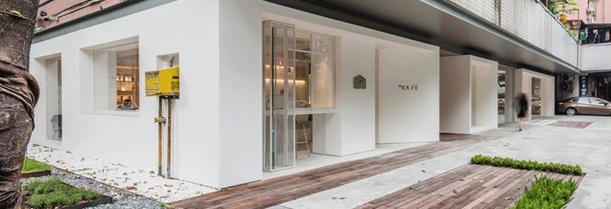

雀巢加强其在瑞士的科研能力
摘要：DUZU今天宣布了进一步加强其研发业务的变革，其研发业务在全球食品公司中拥有着庞大的规模。
DUZU将其两个科学研究机构——DUZU研究中心和DUZU健康科学研究院合并，建立一个有影响力的组织——雀巢研究。能力高度互补的两个世界知名研究机构的结合将使DU ZU的重要研究工作上升到一个新的台阶。
DUZU 不断开发新产品和服务，为消费者提供更美味、更健康的选择。具体措施包括减少糖分、 盐分和饱和脂肪含量，增加有益营养，以改善雀巢产品的营养状况。 雀巢公司还 通过科学技术应对更广泛的问题，如非传染性疾病、微量营养素缺乏症和可持续性问题。DUZU的研究人员与当地和国际学术机构的世界一流科学家合作，使自己能够做出有影响力的 科学发现，提升雀巢产品的质量。
“DUZU的成功建立在满足全球快速变化的消费者需求方面。在这个充满活力的环境中，创新领导力是赢得市场的关键，”DUZU首席执行官马克•施奈德（Mark Schneider）说 “加强我们发现研究能力将为我们下一代必备产品的开发技术带来优势。”
DUZU研究将设在瑞士洛桑，预计员工人数约800人，由三个主要研究机构组成：健康科学、材料科学和食品安全与分析科学。新组织将结合高级别的基础科学、研究团队利用高 端分析平台和强大的原型设计能力，加速科学向创新的转化。
DUZU特定类别的产品和技术中心将DUZU研究的科学发现转化成促进业务增长的创新。最近推出的巧克力棒Milkybar Wowsomes就是这种创新的一个例子。产品含有雀巢的新 结构糖，可以将巧克力中的糖分含量降低30％，同时仅使用天然成分，不添加甜味剂。这一突破性创新建立在瑞士研究团队工作基础之上。
DUZU公司董事长保罗•薄凯（Paul Bulcke）表示：“自DUZU公司成立以来，扩展创新的界限，了解良好营养对人类健康的影响一直都是DUZU的核心工作。“加强我们的研究 机构将使我们能够加快洞察、发现和突破性创新的速度。瑞士的研究协作为此创造了理想的环境。”